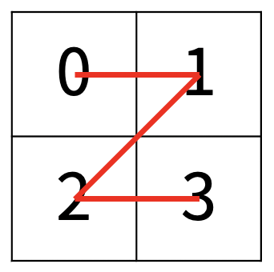
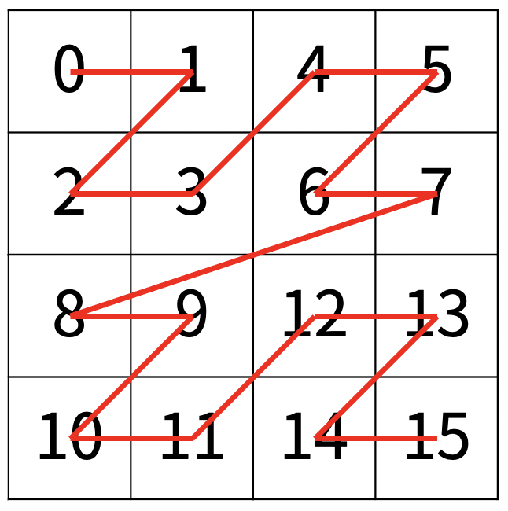
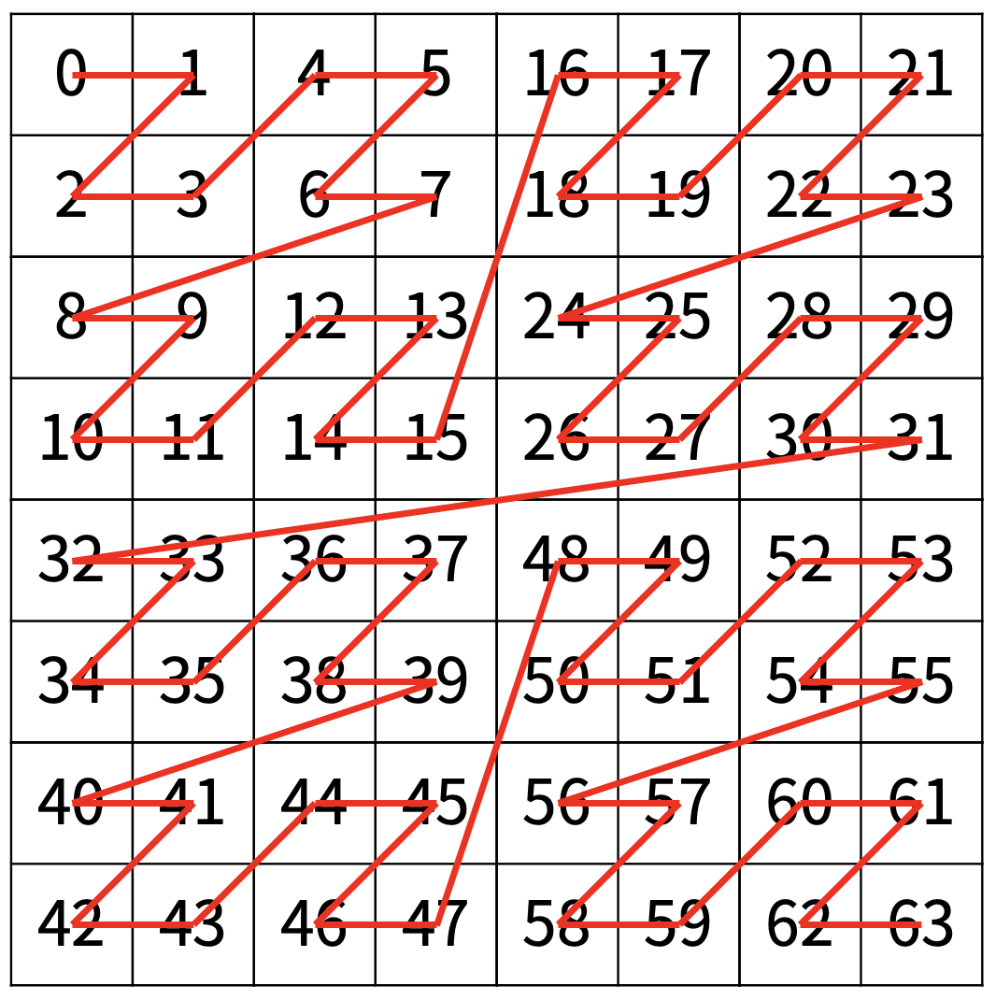

한수는 크기가 2N × 2N인 2차원 배열을 Z모양으로 탐색하려고 한다. 예를 들어, 2×2배열을 왼쪽 위칸, 오른쪽 위칸, 왼쪽 아래칸, 오른쪽 아래칸 순서대로 방문하면 Z모양이다.

N > 1인 경우, 배열을 크기가 2N-1 × 2N-1로 4등분 한 후에 재귀적으로 순서대로 방문한다.
다음 예는 22 × 22 크기의 배열을 방문한 순서이다.

N이 주어졌을 때, r행 c열을 몇 번째로 방문하는지 출력하는 프로그램을 작성하시오.
다음은 N=3일 때의 예이다.

첫째 줄에 정수 N, r, c가 주어진다.
r행 c열을 몇 번째로 방문했는지 출력한다.
Input:
2 3 1
Output:
11
Input:
3 7 7
Output:
63
Input:
1 0 0
Output:
0
Input:
4 7 7
Output:
63
Input:
10 511 511
Output:
262143
Input:
10 512 512
Output:
786432